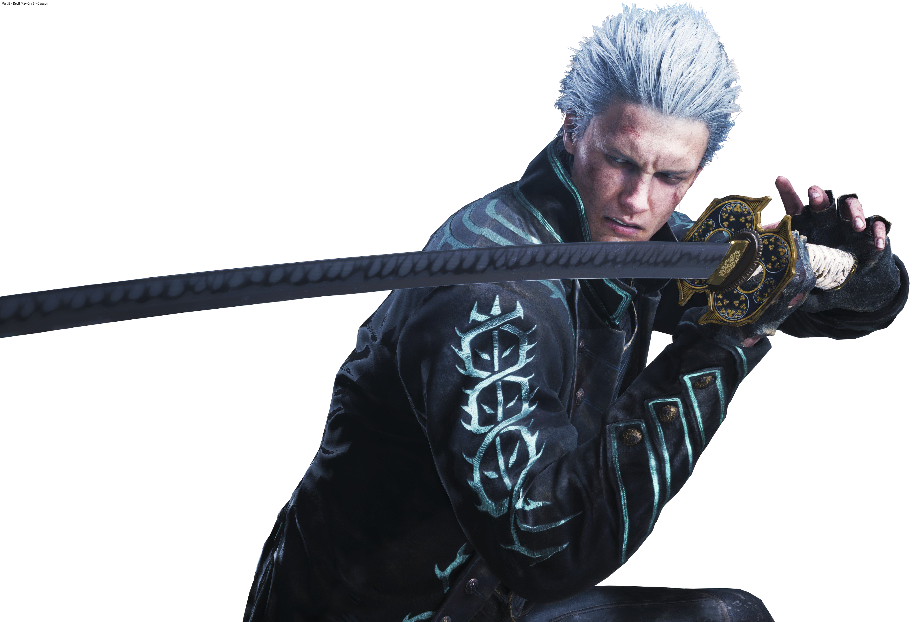
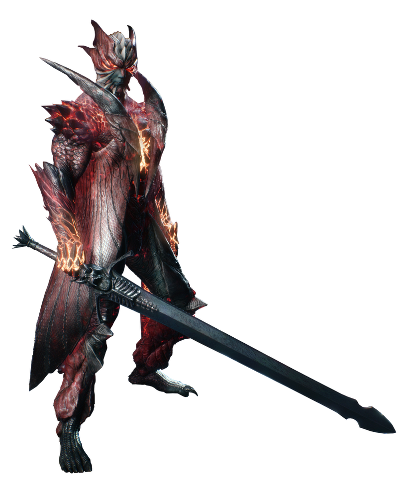
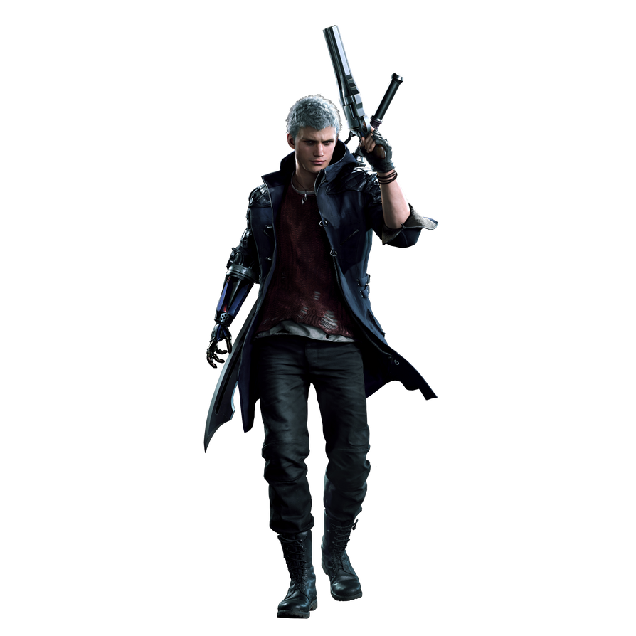

Vergil adalah putra dari iblis Sparda dan seorang wanita bernama Eva, saudara kembar tertua dari Dante, dan ayah dari Nero.
Ia menjadi tokoh antagonis selama berulang ulang dari franchise Devil May Cry. Terutama Devil may Cry 3 : Dante's awakening dan Devil May Cry 5.
Selain menjadi karakter Boss dalam game, ia juga menjadi karakter playable di Devil May Cry 3 dan juga 5.
Setelah kematian ibu mereka ketika Vergil dan dante masih kanak kanak, keduanya menjalani takdir mereka masing masing, dimana Vergil menolak segala sisi kemanusiaaannya, dan lebih memilih sisi iblis dalam dirinya, sementara saudaranya Dante melakukan hsl sebaliknya.
Penyendiri dan pendiam, Vergil menunjukkan sifat dan hasrat kerelaan melakukan apa saja dalam pencahariannya demi memperoleh kekuatan ayahnya Sparda. Menderita kekalahannya dari Mundus dalam secreet ending Devil May Cry 3, ia disiksa dan dirubah menjadi Black Knight Nelo Angelo, muncul di seri pertama Devil May Cry.
Setelah melewati berbagai konflik dalam game, akhirnya dikalahkan oleh Dante. Ini diperlihatkan dalam Devil May Cry 5, bertahun tahun setelah pertempuran terakhirnya sebagai Nelo Angelo, Vergil berhasil bertahan hidup dan saat itu telah terbebas dari kendali Mundus, namun akibatnya ia berada dalam kondisi terlemahnya.
Sebagai sosok misterius berkerudung, yang merebut kembali Yamato dengan memotong Devil Bringer dari putranya Nero dalam prosesnya. Vergil menjadi tokoh antagonis utama seri Devil May Cry ke 5 setelah pendatang baru V dan Urizen menyatu kembali sebagai dirinya, yang terungkap keduanya merupakan sisi iblis dan sisi manusia dari Vergil.

Dante adalah sosok yang telah merasakan kepahitan hidupnya sejak usia muda. Ia adalah saudara kembar Vergil dan keduanya lahir dari ayah yang merupakan iblis bernama Sparda. Namun, yang membuat Dante berbeda adalah bahwa ia adalah hasil dari pernikahan ayahnya dengan seorang manusia. Ayah Dante menikah dengan seorang wanita manusia, sehingga Dante memiliki campuran keturunan iblis dan manusia dalam dirinya.
Kehadiran percampuran ini memberikan Dante kemampuan unik, yakni kemampuan untuk berubah dari wujud manusia ke wujud iblis. Selain itu, kekuatannya terus bertambah seiring dengan perubahan tersebut. Dalam perjalanannya, ayah Dante meninggal lebih dulu, diikuti oleh ibunya yang tewas dibunuh oleh Mundus.
Meskipun memiliki darah setengah manusia dan setengah iblis, Dante cenderung didominasi oleh sifat-sifat manusiawi. Ini tidak mengherankan, mengingat bahwa ayahnya, Sparda, meskipun seorang iblis, telah berjuang untuk melindungi umat manusia selama hidupnya.
Dalam beberapa seri Devil May Cry, Dante memang tidak selalu beruntung dan pernah mengalami nasib yang kurang menguntungkan. Salah satu momen yang mencolok adalah ketika ia pernah tertusuk oleh pedang ikoniknya sendiri, Rebellion. Pedang Rebellion, warisan dari Sparda, terkenal dengan kekuatan dan kehalusannya, dan Dante merasakannya sendiri dalam dua situasi yang berbeda.
Pertama, dalam Devil May Cry 3, Dante menghadapi saudara kembar Vergil dalam pertarungan sengit. Dalam pertarungan yang sangat serius, Vergil menusuk Dante dengan sangat sadis menggunakan Rebellion. Kala itu, pertarungan berakhir dengan kekalahan telak Dante.
Kedua, dalam Devil May Cry 4, Dante juga merasakan tajamnya Rebellion dalam pertarungannya dengan Nero. Setelah Nero menghajar Dante dengan brutal dan melemparkannya ke patung Sparda, Nero menghujamkan Rebellion ke tubuh Dante. Beruntung, Dante adalah makhluk abadi, sehingga ia tidak tewas meskipun tertusuk oleh Rebellion dengan sangat dalam.
Benar sekali, bagi para penggemar setia Devil May Cry, pasti sudah sangat familiar dengan senjata andalan Dante. Ia selalu ditemani oleh tiga senjata utamanya, yaitu Rebellion dan sepasang pistol kembar yang dikenal dengan nama Ebony dan Ivory. Ketiga senjata ini adalah warisan dari ayah Dante, Sparda, dan digunakan sebagai alat pembasmi iblis. Menariknya, desain ketiga senjata ini hampir tidak berubah sepanjang seri permainan, dan mereka selalu menjadi ciri khas Dante.
Bahkan dalam trailer Devil May Cry 5, kita bisa melihat betapa gagahnya senjata Rebellion ketika digunakan oleh Dante, meskipun usia Dante sendiri telah masuk ke masa senja. Ketiga senjata ini telah berhasil mengalahkan berbagai macam monster, baik yang berukuran kecil maupun besar, dalam berbagai pertempuran epik dalam permainan Devil May Cry. Senjata-senjata ini adalah bagian integral dari karakter Dante, dan mereka selalu menjadi alat yang sangat efektif dalam melawan kejahatan iblis.

Nero (Jepang: ネロ) adalah karakter dalam Devil May Cry, sebuah seri video game hack and smash aksi-petualangan oleh pengembang dan penerbit Jepang Capcom. Dia adalah keponakan dari protagonis asli Devil May Cry Dante, dan putra dari antagonis seri berulang Vergil. Dia pertama kali muncul di Devil May Cry 4 sebagai protagonis utama. Nero, seorang remaja yang bekerja untuk Order of the Sword, menggunakan kekuatan iblis yang diwarisi dari Sparda untuk memburu iblis. Nero kembali sebagai protagonis utama di Devil May Cry 5 untuk melawan raja iblis Urizen, sebuah ancaman baru. Ia juga pernah tampil di media cetak terkait kedua pertandingan tersebut. Dia digambarkan dalam akting suara dan penangkapan gerak oleh Johnny Yong Bosch.
Nero diciptakan oleh Bingo Morihashi dan dirancang oleh Tatsuya Yoshikawa, yang ingin membedakannya dari protagonis serial veteran Dante. Nero disuarakan oleh Johnny Yong Bosch dalam bahasa Inggris dan Kaito Ishikawa dalam bahasa Jepang. Sutradara Hideaki Itsuno bertujuan untuk membuat Nero menonjol dalam narasi meskipun lebih muda dari kebanyakan karakter dan dengan demikian akan memperoleh kekuatan baru dalam prosesnya.
Penerimaan kritis sebagian besar positif; jurnalis game menemukan bahwa meskipun penggemar akan merindukan bermain sebagai Dante selama debut Nero, kepribadian dan kemampuannya juga sama menariknya. Penampilan dan tindakan barunya di sekuelnya, Devil May Cry 5, juga mendapat pujian dari para kritikus yang membantu membedakannya dari karakter lain yang dapat dimainkan.
Di beberapa seri, Dante memang terkadang terkena nasib sial. Ya, ia pernah tertusuk oleh pedang ikoniknya miliknya sendiri. Pedang Rebellion yang merupakan warisan Sparda memang terkenal tajam dan Dante telah merasakannya. Di seri Devil May Cry 3, Vergil pernah menusuk Dante dengan sangat sadis menggunakan Rebellion. Kala itu saudara kembar tersebut memang bertempur mati-matian dan hasilnya Dante kalah telak.
Tak berhenti sampai di situ, di Devil May Cry 4, Dante juga pernah merasakan tajamnya Rebellion. Hal itu terjadi di pertarungan Dante ketika menghadapi Nero. Usai meninju wajah Dante dan melemparnya ke patung Sparda dengan brutal, Nero langsung menghujam Rebellion ke tubuh Dante. Untungnya Dante merupakan makhluk immortal sehingga ia tidak tewas meskipun terhujam Rebellion dengan telak.
Fakta Dante Devil May Cry yang satu ini sangat menarik nih karena ada tiga karakteristik yang harus melekat agar sifat seorang Dante itu muncul. Hal tersebut diungkapkan langsung oleh sang pencipta Dante, Hideki Kamiya. Yang pertama adalah Dante harus menggunakan jaket panjang yang sangat stylish dengan model yang mantap, harus orang Inggris, dan tidak merokok. Untuk alasan yang terakhir, Kamiya mengatakan bahwa karakter yang keren tidak selalu perlu merokok. Kenyataannya, Dante benar-benar luar biasa meski sama sekali tak menyentuh rokok. Meskipun terlihat berandal, tapi Dante bisa keren dengan caranya sendiri.
Mochamad Yogi Ady Pratama
10123170
IF-4
SMAN 1 Sindang Indramayu berdiri sejak tahun 1961, terletak di Jalan Letjen MT Haryono Kecamatan Sindang Kabupaten Indramayu.
Pada awalnya SMAN 1 Sindang Indramayu berdiri dengan nama SMAN Indramayu, dan beberapa kali mengalami perubahan nomenklatur (nama) sekolah, yaitu SMAN 1 Indramayu, SMUN 1 Sindang, dan sekarang SMAN 1 Sindang Indramayu.
Pada tahun 2004 dan 2007, SMAN 1 Sindang memperoleh Akreditasi A (amat baik) dari Badan Akreditasi Nasional Sekolah
Pada tahun 2007, berdasarkan Keputusan Direktur Pembinaan SMA Direktorat Jenderal Manajemen Pendidikan Dasar dan Menengah Departemen Pendidikan Nasional nomor 697/C4/MN/2007 tanggal 18 Juli 2007, ditetapkan sebagai Rintisan Sekolah Bertaraf Internasional (RSBI)
Pada tahun 2009 berhasil meraih Serifikat ISO 9001: 2008 dari Badan Sertifikasi Internasional.